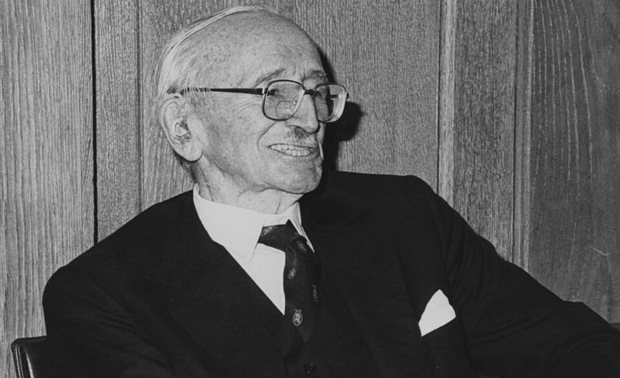

这一章在做什么
接上一页：婚离了，联邦贸易委员会的任命没成，1976 年夏天他搬到斯坦福旁边。这一页他 46 到 49 岁，有两条线：一本写了三年的书，和一份越教越没劲的教职。儿子 John 搬来同住。各节不全按时间先后排。读的时候盯住每一节末尾那句话，他在一条条攒离开讲台的理由。
1976 1977 1978 1979 1980
他在哪
行为科学中心
胡佛
Amherst
U.C.L.A.
1980.9 胡佛
那本书
动笔
1978 初稿
1979 定稿
1980 出版
John
跟父亲住
1977.5 监护权归他
本站示意图，月份按书里的说法估计。1979 年春天以后到 1980 年 9 月之间他在哪，这一章没有细说，所以画成虚线。出版年份是书外的史实。
出场的人
这一页点名的人多，大半只出场一次。听书时先分清：哪些是家里人，哪些是当年报上常见的名字。
John 儿子 这一段十一到十三岁。1977 年 5 月监护权归作者，秋天起跟他住。会下棋，心算好。
Lorraine /ləˈreɪn/，女儿 跟母亲留在洛杉矶。名字在这一页只出现一次（第 21 节），听到别以为是新人物。
his mother / my ex-wife 前妻，书里不写名字 John 的监护权在她手里，给不给，反复了一年。
Walter Williams 男，经济学家 上一章认识的朋友，也是黑人。第 16 节和作者一起去国会作证。
S. I. Hayakawa /ˌhɑːjəˈkɑːwə/，男 加州的联邦参议员，日裔。第 22 节请吃饭，提了个让作者愣住的主意。
Arthur Laffer /ˈlæfər/，又叫 Art 经济学家，「拉弗曲线」就是他的名字。Hayakawa 顾问班子里的另一位。
Irving Kristol /ˈkrɪstəl/，男 杂志 The Public Interest 的主编，上一页的信里提到过。这里只说了一句话。
Midge Decter /mɪdʒ ˈdektər/，女 那本书的编辑。Midge 是女人的名字。
Henry Manne /ˈmæni/，男 迈阿密大学的法学教授，约他写一篇法律题目的论文。姓读「曼尼」。
Norton 又叫 Nort 作者大学时的室友（第 5 章），此时是 Amherst 的数学系主任。
三处容易听岔的。 第 25 节对话里的 Bill Smith 不是真人，是「某个学生」的代称，相当于张三。第 24 节的 Washington University 在密苏里州圣路易斯，是私立大学，和华盛顿州、华盛顿市都没关系。前半页说的 the Center 是斯坦福旁边的研究中心，第 20 节的 the Center 是迈阿密大学的另一个机构。
背景：作者默认你知道的事
那本书，和哈耶克的一篇文章

哈耶克，1981 年 1 月，在伦敦政治经济学院首次讲课五十周年那天。作者不详，公有领域，维基共享资源 Knowledge and Decisions 1980 年出版。它的出发点是哈耶克（F. A. Hayek，1974 年诺贝尔经济学奖得主）1945 年的文章 The Use of Knowledge in Society ：一个社会用得上的知识分散在无数人手里，谁也没法把它收齐；价格的作用是把这些零散的知识传出去。
索维尔把同一个问题从市场推到法律和政治：一件事由谁来决定，决定的人知道多少，后果由谁承担。回忆录里不讲书的内容，只讲写它有多难。
两个不用上课的地方
Center for Advanced Study in the Behavioral Sciences ，1954 年成立，在斯坦福校园边的山坡上，每年请一批学者来住一年，各做各的研究。
Hoover Institution 在斯坦福校内，1919 年由后来当了总统的胡佛（Herbert Hoover）创办，起初是收藏一战文献的图书馆，后来成了有常任研究员的智库（think tank）。
两处的共同点是只做研究，不教书。这一页里他一直在比较的就是这种日子和讲台上的日子。
1976 年是大选年
共和党初选
Ford
现任总统
Reagan
前加州州长
Ford 获提名
8 月，票数很接近
Carter
民主党提名人
11 月大选
Carter 当选
本站示意图。第 13 节的记者会发生在共和党提名还没定的时候。
美国总统选举分两步：各党先在党内选出一个人（提名），再两党对决。1976 年少见的是，现任总统福特在自己党内遇到了强劲的挑战者里根，拖到 8 月的党代表大会才勉强胜出，11 月又输给民主党的卡特（Jimmy Carter）。
所以那一年华盛顿的任何一件事，记者都先问「这对谁的选情有利」。上一页的任命是这样黄的，第 13 节的记者会也是这个气氛。
校车（busing）
1954 年最高法院判公立学校的种族隔离违宪。可是学生就近入学，黑人区白人区分开住，学校照旧是分开的。1971 年最高法院认可了一种办法：法院可以下令用校车把学生送到别的街区上学，让各校的黑白比例接近。
1974 年联邦法官在波士顿下了这样的命令，白人工人街区激烈抵制，冲突持续了几年。第 13 节说的波士顿就是这件事。作者反对 busing，读的时候注意他问的是「有没有效果」。
Amherst 和「五校」
Amherst College 的主草坪，正中白色门廊的是 Johnson Chapel，2011 年。olekinderhook，CC BY 3.0，维基共享资源
Amherst College 在马萨诸塞州西部的小镇 Amherst，是只办本科的小型文理学院（liberal arts college），全校一两千学生，小班上课，名气不输常春藤。作者想试的就是这个：换成小学校，教书会不会重新有意思。
它和附近四所学校组成联盟，学生可以互相选课。其中 Smith 和 Mount Holyoke 是女校，所以他的课上会有一位「不是 Smith 就是 Mt. Holyoke 来的」女生。
北 ↑ 不按比例
Amherst
Amherst College（他在这里）
还有州立大学和 Hampshire College
Northampton
Smith College（女校）
South Hadley
Mount Holyoke College（女校）
Springfield
最近的法律图书馆，往返要一天
New Haven（康涅狄格州）
带 John 去比赛的地方，一百多公里
两所女校都在
十几公里之内
本站示意图。第 19、20 节提到的几个地名的相对位置。
Hayakawa，和那一屋子未来的大法官
S. I. Hayakawa 任参议员期间的官方肖像。United States Senate，公有领域，维基共享资源
S. I. Hayakawa （1906–1992）生在加拿大，父母是日本移民。本行是语义学，写过一本很畅销的教科书。1968 年学生罢课时他出任旧金山州立学院的代理校长，态度强硬，一举成名；1977 到 1983 年是加州的共和党籍联邦参议员。第 22 节他在日本餐馆门口那句玩笑，要知道他是日裔才好笑。
第 24 节点了三个名字：Clarence Thomas 、Ruth Bader Ginsburg 、Antonin Scalia 。三人后来都进了联邦最高法院，分别在 1991、1993、1986 年。最高法院一共九位大法官，所以作者说是「三分之一」。
留个记号：后面还会回来
这一页里作者自己插的旗子，多半在一节的最后一句。
离开讲台的理由，一条一条 第 19、25 节 他把 Amherst 那件事叫作学术界往哪里去的一个征兆，把 U.C.L.A. 那件事叫作又一块路标。第 5 章里他是为了教书才走这条路的，对着读。
关不关办公室的门 第 19 节 他拿这件事和自己第一年教书时（Douglass College，第 6 章）对比。两头隔了十五年，他要你看的是中间变了什么。
来要签名的年轻人 第 24 节 当时他不觉得这天有什么可记的，是「多年以后」才知道那是谁。这个名字下一章还会出现。
「不知道它会怎样改变我的事业」 第 26 节 说的是那本书。改变了什么，本节末尾给了一半答案，另一半在第 11 章。
词与短语
词条按书里出现的顺序排，小标题是原书用 • • • 隔开的各节。斜体小字是那句话里的几个词，在 Kindle 里搜它就能跳到那一句。单个的生词长按就能查，这里收的主要是词典帮不上忙的。
第 13 节 · 校车和记者室
school busing
… such things as school busing and …
校车接送（政策）
用校车把学生送到别的街区上学，以打破学校里的种族隔离。bus 作动词。下文 were bused to 是被动。见上面「校车」。
symbolic issues
… both had become symbolic issues, which …
用来表态的议题
支持还是反对成了立场的记号，没人再问做了有没有用。后面的 pure symbolism 是同一个意思。
go in for
… we were going in for pure …
一门心思搞起了……
不是「进去」。go in for 某事 = 热衷于、专走这条路。
avowed purpose
… counterproductive for its avowed purpose, except …
公开宣称的目的
avowed 暗示「嘴上说的」。counterproductive：适得其反。
don’t confuse me with the facts
… don’t confuse me with the facts.” …
别拿事实来搅乱我
美国的一句老俏皮话，前半句是「我主意已定」。挖苦先有结论的人。
the national press
… encounter with the national press, after …
全国性媒体的记者
press 是新闻界。下文 press room 是白宫的记者室。
flat accusation
… reporter made a flat accusation: …
一句不留余地的指控
flat 不是「平」，是直截了当、不加限定。
nomination battle
… win his Republican nomination battle with …
党内的提名之争
见上面「1976 年是大选年」。
preface his remarks with
… necessary to preface his remarks with …
开口之前先交代一句
preface 作动词。partisan politics ：自己属于哪一党。
walk my precinct
… to be walking my precinct in …
在我那一片挨家挨户拉票
precinct /ˈpriːsɪŋkt/ 是最小的选区单位。get out the vote ：催自己这边的人去投票。
neither register nor vote
… who neither register nor vote.” …
既不登记、也不投票
美国投票要先登记成为选民，登记时通常填一个党派。
第 14、15 节 · 监护权，和「专家」
come live with me
… would like to come live with …
搬来跟我住
come / go 后面直接跟动词原形，是美式口语。
take custody of
… possibility of my taking custody of …
取得（孩子的）监护权
custody /ˈkʌstədi/。反过来是下文的 relinquish custody ，交出监护权。
approach me about
… Amherst College approached me about becoming …
主动来找我谈……
approach 某人 = 来接洽、试探意向，不是走近。
visiting professor
… becoming a visiting professor there during …
客座教授
只待一年，原来学校的职位还留着。academic year 是学年，九月到次年五六月。
drag John across the country
… to drag John across the country …
拖着 John 从西岸搬到东岸
drag 带着「硬拽」的意思：他觉得这对孩子不好。
as he put it
… because, as he put it, “You …
照他的说法
put = 表达。作者用它和那句话拉开距离：这是他说的，不是我说的。
West Indians
… authority on West Indians in the …
西印度群岛人
不是印度人。指牙买加、巴巴多斯等加勒比海岛屿来的移民，多是黑人。作者研究过他们在美国的收入。
taken aback
… Taken aback, I replied: …
吃了一惊
double spaced
… ten typewritten pages, double spaced.” …
隔行打的
打字稿的标准格式，行与行之间空一行，一页只有两百多词。十页就是两三千词。
第 16 节 · 坐在身后的人
double-dealing
… lesson in Washington double-dealing came when …
两面派的做法
another 接的是上一页那次没成的任命。
testify against a bill
… to testify against a popular bill …
到国会作证，反对一项法案
bill 是还没通过的法案，不是账单。国会委员会开听证会（hearing），请正反两边的证人（witness）发言。
was supposed to be
… legislation was supposed to be beneficial …
号称是……
言下之意：实际上不是。
publicly identified with
… he was publicly identified with their …
在公开场合被看作是……那一边的
nowhere to be seen
… was nowhere to be seen in …
不见人影
our old buddy
… what happened to our old buddy,” …
咱们那位老伙计
话里带刺。作者这时还没想明白，Walter 下一句替他点破。
can’t afford to be seen with
… can’t afford to be seen with …
不能让人看见他跟我们在一起
afford 说的不是钱，是「担不起那个后果」。
feed me information
… hearings to feed me information to …
给我递材料
feed 用在消息上：暗中供给。上一页也有一处，是别人给参议员递问题。
no popularity to lose
… that I had no popularity to …
反正没有人缘可丢
自嘲。
第 17、18 节 · Purdue 的演讲，和里根吃午饭
black studies
… a local black studies class devoted …
黑人研究（课）
1960 年代末学生运动之后各大学新设的科系。
overdo it
… Fortunately for me, they overdid it. …
做过了头
Attilla the Hun
… that if Attilla the Hun had …
匈人王阿提拉
5 世纪横扫欧洲的首领，英语里「凶残」的代名词。通常拼作 Attila，书里多了一个 l。
give me a hard time
… tried to give me a hard …
刁难我
I dealt with them
… time, but I dealt with them. …
我把他们对付过去了
一场交锋只用这几个词带过，是往轻里说。
on a lighter note
… On a lighter note, one of …
说件轻松点的
note 是音调、口气。
needle
… obviously designed to needle the black …
拿话刺一下
needle 作动词。
date
… have enough money to date black …
（男生）约……出去
作动词。这句回答把矛头掉了个头，成了说黑人女生难请。所以在场的男生和女生反应正相反。
faculty club
… over to the faculty club to …
教员俱乐部
美国大学里教师吃饭、招待客人的地方。
a man of substance
… man of much more substance than …
肚子里有东西的人
substance = 实在的内容。credited with ：别人承认他有。当时媒体常把里根写成只会念台词的演员。
clemency or pardon
… the power of clemency or pardon, …
减刑或赦免
州长对本州的死刑犯有这个权力。clemency /ˈklemənsi/。这次处决是 1967 年 4 月，里根上任才三个多月；加州的下一次要到 1992 年。
on his own notion
… it just on his own notion, …
单凭他自己的想法
notion 是没有依据的念头。意思是：没有法律上的理由，他不肯只凭个人好恶去拦。
I don’t mind telling you
… “I don’t mind telling you, inside …
不瞒你们说
后面跟一件通常不好意思说的事。
第 19 节 · 别关门
by and large
… By and large, I liked teaching …
总的来说
后面多半跟一个「但是」。
sink in
… for this to sink in on …
（话里的意思）才让人回过味来
Have we come to that?
… “Have we come to that?” I …
已经到这一步了吗？
come to = 落到某种地步。we 指整个大学。
turn my stomach
… The whole thing turned my stomach, …
让我反胃
prudish
… I was considered prudish for not …
古板，太讲男女之防
/ˈpruːdɪʃ/。十五年前不请学生到家里来算古板，现在连门都不敢关。
vindictive charges
… for fear of vindictive charges of …
出于报复的指控
charge = 指控，不是收费。vindictive /vɪnˈdɪktɪv/。
weigh on my mind
… weighed so much on my mind …
压在心上
这一长句的结构：这件事意味着什么，占满了他的脑子，结果反倒把同事的提醒忘了。
blow off steam
… Fortunately, she just blew off steam …
发了一通火，出了气
字面是锅炉放汽。意思是火发完也就完了。
第 20 节 · 法律论文，洗衣店，数列
state action
… legal concept of “state action”—a phrase …
「政府行为」
美国宪法学的术语：宪法里的权利条款只约束政府，不约束私人，所以一件事算不算政府所为很要紧。state 这里泛指政府，不单指州。
in no time
… I would master in no time. …
一转眼就能
the source of Manne’s optimism
… about the source of Manne’s optimism. …
Manne 哪来的这份信心
正话反说：我越看越觉得自己搞不定。
xerox
… to read and xerox relevant court …
复印
施乐公司的商标当动词用，读 /ˈzɪrɑːks/。
make heads or tails of
… I couldn’t make heads or tails …
（完全）摸不着头脑
硬币的正面和反面都分不出来。只用在否定句里。
a conference with teachers
… for a conference with John’s teachers …
和老师的面谈
不是大会。美国中小学的家长和老师一对一谈话叫 conference。counselor 是学校的辅导员。
laundromat
… were off to the laundromat, to …
投币自助洗衣店
租房的人家里常常没有洗衣机。be off to = 动身去。
the only consolation
… The only consolation was that, once …
唯一的安慰是
这一段里说了两遍，各指一件事：论文能用进那本书；John 过得安稳了。
the formula behind the series
… formula behind the series as a …
这列数背后的规律
series 是数列。答案里的 3x − 1 指每个数是前一个数乘 3 再减 1。
have … over to dinner
… he had John and me over …
请……到家里吃饭
in his head
… doing such problems in his head—and …
心算
数学系主任自己倒要拿纸笔验算，这是这一节的包袱。
第 21 节 · 回 U.C.L.A.
turn up
… attractive offer elsewhere had turned up …
出现，冒出来
offer 在这里是聘书、工作邀请。
go on leave
… since I went on leave from …
请长假离校
职位保留着。所以他能说回去就回去。
by default
… in January 1978, by default. …
因为没有别的路
不是选了它，是别的都没成，剩下它。全句的重心在最后这两个词上。
attendance boundaries
… a map showing their attendance boundaries, …
学校的招生片区
美国公立学校按住址划片入学。所以他先挑学校，再在片区里找房子。junior high school 是初中。
every other weekend
… complete weekend every other weekend. …
隔一个周末
every other = 每隔一个。
chess ratings
… our official chess ratings arrived from …
国际象棋等级分
美国棋协按比赛成绩算出的分数。差两百分是明显的一档。
第 22 节 · 参议员的主意
you barbarians
… “You barbarians all have to take …
你们这些蛮夷
日裔参议员对一桌白人和黑人教授说的玩笑。日本餐馆进门要脱鞋。
Republican primary
… enter the next Republican primary,” he …
共和党的初选
primary 作名词：党内先投票选出本党的候选人。run for 是竞选。
honcho
… A honcho from one of the …
头头
/ˈhɑːntʃoʊ/，美国口语，来自日语的「班長」。下一章开头还会出现。
political pro
… I said to one political pro, …
吃政治这碗饭的行家
pro = professional。指帮人打选战的人。
freshman Senator
… influence as a freshman Senator, one …
新当选的参议员
freshman 不只指大一新生。参议院共一百席，资历浅的说话没分量。
want it so bad you can taste it
… job so bad you can taste …
想要到了馋的地步
bad 在口语里当副词用，= badly。
not cut out to be
… I was not cut out to …
天生不是当……的料
字面是裁衣服：没按那个样子裁。
worst-case scenario
… gave me the worst-case scenario: …
最坏的情况
包袱在下一行：最坏的情况是「你可能当选」。
the stuff of which … are made
… the stuff of which successful politicians …
做成……的那种材料
第 23、24 节 · 初稿，和一次法学院的会
first draft
… finished the first draft of Knowledge …
初稿
第 26 节的 final draft 是定稿。manuscript 是还没印成书的稿子。
the frosting on the cake
… was the frosting on the cake. …
锦上添花
frosting 是蛋糕上的糖霜。英国说 icing on the cake 。
what might happen to me
… regardless of what might happen to …
万一我有个三长两短
if anything happened to me 是「如果我死了」的委婉说法。上一页写过他家几个人接连心脏病发作。
autograph
… me to autograph a copy of …
在（书上）签名
作动词。Race and Economics 是他 1975 年出的书，见上一章。
on the same panel
… On the same panel with me …
和我同一场、同台发言的
panel 是会上并排坐着发言的一组人。symposium：专题研讨会。
第 25、26 节 · 分数，和告别
something of a downer
… experience something of a downer. …
挺让人泄气的一件事
something of a = 有几分算是。downer 是口语。
the lecture circuit
… I addressed on the lecture circuit and …
各地巡回演讲（的场子）
circuit 是绕一圈的路线，不是电路。
lackadaisical
… and the lackadaisical attitudes in the …
懒洋洋，无所谓
读 /ˌlækəˈdeɪzɪkl/，听书时不好认。
the rigors of
… to rest up from the rigors …
（硬课的）苦头
研究生把他的思想史课当成歇脚的地方。econometrics：计量经济学。
connivance
… the help and connivance of academic …
纵容，睁一只眼闭一只眼
/kəˈnaɪvəns/。academic administrators 是院长、教务这类行政人员。
make a nuisance of oneself
… or who just made a nuisance …
死缠烂打，闹到你烦
nuisance /ˈnuːsns/。这个说法在这一节出现两次。
play it straight
… those students who played it straight, …
老老实实按规矩来
politic
… What was politic, however, carried much …
圆滑，不得罪人
形容词，重音在前 /ˈpɑːlətɪk/，不是 political。carry weight ：有分量。
ombudsman
… of someone called an ombudsman, whose …
申诉专员
瑞典语来的词，/ˈɑːmbʊdzmən/。机构里专门受理投诉的人。作者说了它名义上管什么、实际上管什么。
lend an ear
… The chairman would lend an ear …
听一听
只是听，不表态。
we have both done our jobs
… Now we have both done our …
咱俩都算交了差
系主任的本分是转达，教授的本分是不改。两人心里有数。
mouth off
… jerk sat inside, mouthing off. …
嘴里嚷个不停
mouth 作动词。jerk：混蛋。全书难得的粗口。
open me up to
… would only open me up to …
让我落下（被告的）把柄
academic nothing
… was elaborate, clever, academic nothing. …
学院式的「什么也没做」
nothing 当名词，前面三个形容词修饰它。reprimand 是书面警告。
cross-examine
… meant concretely (and cross-examined him, as …
像盘问证人那样追问
法庭用语：律师盘问对方的证人。
landmark on the road
… was another landmark on the road …
路上的又一块标记
破折号后面他改了口：不要的不是教书，是教书后来变成的样子。
endowed chair
… offer of an endowed chair in …
讲席教授的职位
chair 不是椅子。用捐赠基金供养的冠名教授职位，是教授里最高的一档。
top
… The Hoover Institution then topped Virginia’s …
开出更好的条件，压过了
top 作动词。Senior Fellow ：高级研究员。
值得停下来的句子
I had come to Amherst, basically, to find reasons to continue teaching. What I found instead were more reasons to abandon an academic career.— 第 19 节末尾。本站译：我来 Amherst，说到底是想找到继续教书的理由。找到的却是更多放弃学术生涯的理由。
两句话用同一副骨架：to find reasons to … 对 more reasons to … ，continue 对 abandon 。第二句的主语是一整个从句 What I found instead ，instead 是转折的支点。
这是全页的主题句。前后各节里那些「又一个征兆」「又一块路标」都挂在它上面。注意他丢掉的词从 teaching 换成了 an academic career，范围变大了。
“I represent those vast millions of Americans who neither register nor vote.”— 第 13 节，白宫记者室里轮到他表明党派时。本站译：「我代表的是那千百万既不登记、也不投票的美国人。」
前面每个人都老老实实报了自己是哪个党。他借用政客的套话 I represent … ，填进去的却是一群没人代表的人。意思是：我哪个党也不是。
这句是玩笑，也是他给自己的定位。上一页报纸刚给他贴了「黑人保守派」的标签，下一章开头他又声明了一次自己不属于任何政党。
检查一下理解
先在心里答，再点开。答错的那题，回书里把那一节再读（或再听）一遍。
1. 记者指责那群反对 busing 的人是来帮福特打选战的。结果这群人里有几个支持福特？ 一个也没有。报了共和党的全是里根的支持者，还有民主党人说要替卡特拉票，作者自己则说哪个党也不是。这一节的笑点在这里：指控一出口，人人都得先自报家门，报完发现指控完全落空。
2. 国会听证会上，坐到作者身后小声说话的那位黑人同行，站在哪一边？ 公开场合他站在支持法案的一边，还先去和那边的证人打了招呼。私下里他认为这项法案对黑人有害，所以来给作者递反驳的材料。他自己不能公开这么说，听证一结束就走了。作者当时没看懂，是 Walter 一句话说破的。
3. Amherst 的同事叮嘱「她在里面的时候别关门」。作者照做了吗？出事了吗？ 没照做，也没出事。他满脑子在想「大学怎么到了这一步」，反倒忘了提醒，顺手把门关上了。那位女生只是来为分数发火，他一个分数也没改。让他难受的不是这次谈话，是需要有这种提防本身。
4. 1978 年 1 月他回 U.C.L.A.，是因为还是觉得那里最好吗？ 不是。他用的词是 by default：离校这一年半里没有出现足够好的别的去处，只剩回去。接下来他说日子「舒服，但不是我真正想要的」。
5. Hayakawa 提议他去选参议员，是玩笑吗？他最后为什么不去？ 不是玩笑，作者起初当成玩笑，幕僚马上说参议员是认真的，钱也有人出。他去请教了几位打选战的行家，听到的是：得馋那个位子，家人是用来帮你当选的，时间全花在拉票上。他问的却是公共利益和谁来照顾儿子。问到后来，双方都认定他不是这块料。
6. 系主任把学生的抱怨写成备忘录转给作者，是在向他施压吗？ 不是。系主任只转达，不建议怎么办，两人在校园里碰上时那几句对话说明彼此早有默契。作者不满的是另外两处：专门替学生出头的 ombudsman，以及事后把处分做成「等于没有」的院长。